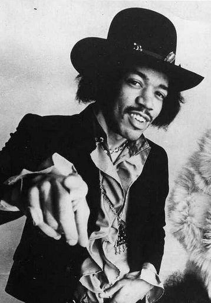

Home
Biography
Facts
Songs
Interesting facts about Jimi Hendrix

Show an interesting fact about his playstyle.
Jimi Hendrix was left-handed. When he got his first guitar, he simply flipped the guitar and rearranged the strings in the proper order. However, the bottom cutaway was now at the top and vice versa. In Hendrix’s Fender Stratocaster (and most guitars), this is not ergonomically correct, as your hand loses space to reach the upper frets. Think about it for a second. Most guitarists spend hours just pondering which guitar is the most comfortable for them and how to make the playing experience as smooth as possible. Using the body of a left-handed guitar for a right-handed person (or vice versa) is considered borderline insanity. However, that is exactly what the greatest guitar ever did and it did not stop him from becoming such an icon.
Show an interesting fact about his career.
Jimi Hendrix was born in Seattle and lived in the U.S. most of his short life. However, he did not become a known musician in the U.S until after he visited Britain. In the UK, Hendrix did small tours of clubs and that was enough to put the local scene on notice. The British took to Hendrix immediately, including Eric Clapton. One particular performance stands out. In late 1966 Hendrix performed in a club with Eric Clapton, John Lennon, Paul McCartney, Jeff Beck, Pete Townshend, and Mick Jagger in attendance. They all were stunned by Hendrix’s incredible display of musicianship and guitar fireworks. His fame grew exponentially in Britain and he became a very well-known guitarist in a very short period of time.
Show an interesting fact about his discography.
Jimi Hendrix only released three studio records. The first one was Are You Experienced in 1967. This was followed by Axis: Gold as Love in the same year, and Electric Ladyland in 1968. Three records is a low number for such an influential musician. However, Hendrix only lived until he was 27 so he did not have much time for a prodigious output. All of the records above are considered classics with a massive influence. Electric guitarists still transcribe the solos and learn the songs from Hendrix’s three incredible releases. Shortly before his death, Jimi Hendrix released Band Of Gypsys, a live album recorded in January of 9170. Many records have been released posthumously and they feature previously unreleased tracks, rarities and live cuts. Some of these releases are unauthorized.